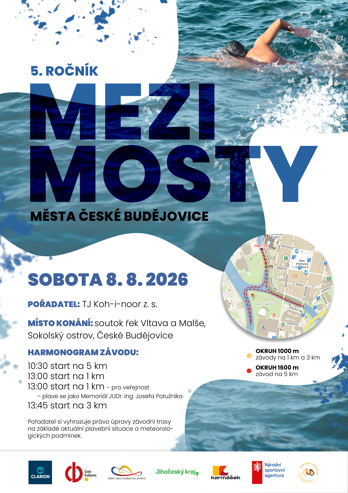
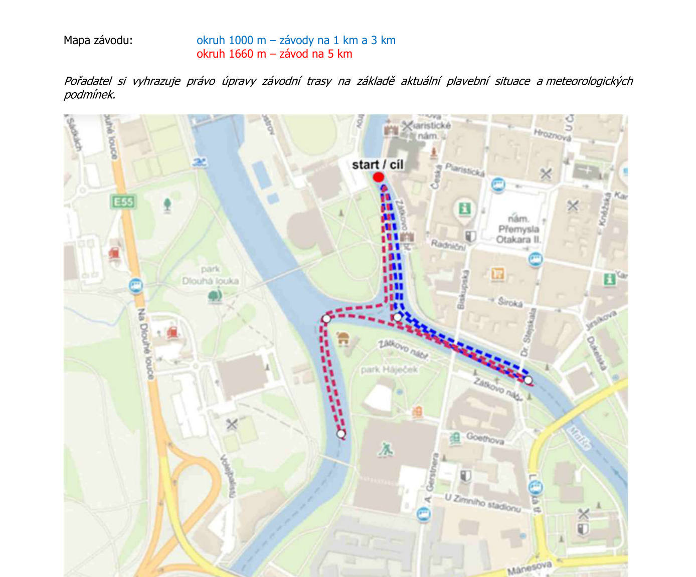

Mezi mosty 2026
Závod v plavání na otevřené vodě · sobota 8. srpna 2026
Závod v plavání na otevřené vodě · sobota 8. srpna 2026

Soutok Vltavy a Malše · Sokolský ostrov · České Budějovice

| Kategorie | Vzdálenosti |
|---|---|
| Dorost, dospělí, masters |
1 km
3 km
5 km
|
| Kadeti |
1 km
3 km
5 km
|
| Starší a mladší žactvo |
1 km
3 km
|
| Veřejnost |
1 km
|
Závod v kategorii 1 km veřejnost nese název Memoriál JUDr. Ing. Josefa Potužníka. Závodní okruh měří 1 000 m nebo 1 660 m (dle disciplíny).
Hlavní disciplína je víceboj – součet časů ze vzdáleností 5 + 3 + 1 km v kategorii dorost/dospělí/masters/kadeti.
Přihlášky po termínu nebo na místě: 400 Kč / start.
Závodníci mimo ČSPS se přihlašují na zzmodel@seznam.cz.
Sokolský ostrov, České Budějovice
Soutok řek Vltavy a Malše
Uzávěrka přihlášek: 5. srpna 2026
Závod je spolufinancován Statutárním městem České Budějovice, Národní sportovní agenturou a Jihočeským krajem.